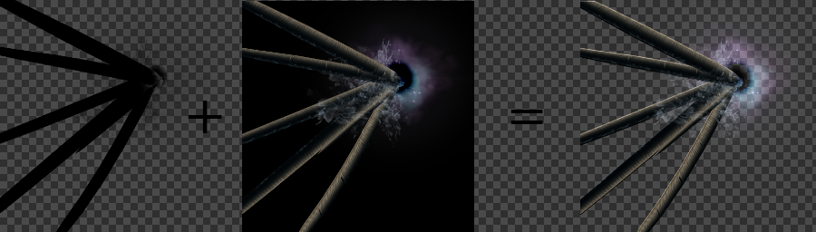
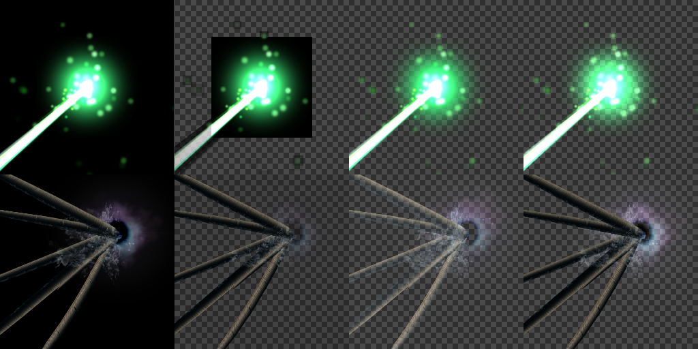

Recorder¶
Overview¶
Allows you to output the created effect as a sprite sheet, gif animation, AVI, etc. This function is very useful in situations such as when posting effects on your Twitter/Blog/Website/etc., or other situations where you cannot directly play effects created with Effekseer, through the runtime or otherwise.
 |  |
Parameter¶
Resolution¶
Width/Height¶
Sets the output size for each frame of the animation.
Scale¶
The recording area is enlarged from the actual screen. For example, if the width and height are 256 and the Scale is 2, the 256 range is enlarged by a factor of 2 and recorded, and an image with a resolution of 512 is exported.
Show guide¶
When checked, the bounds of the recording canvas is displayed on the screen. Anything inside the guide will be recorded, anything outside the guide will be cropped out.
Exported Frame¶
Start Frame¶
Sets the frame to start recording from for outputting the image to a file.
End Frame¶
Sets the frame where recording will be stopped when outputting the image to a file.
Frequency (Frame)¶
Sets the level of frame skipping in the file output. For example, for a value of 1, when 60 frames are recorded, 60 images will be output. For a value of 2, when 60 frames are recorded, only 30 images will be output (every other frame). If you increase the number like this, the file size will become smaller at the cost of choppier animations.
Format¶
There are 4 options: "Export as a single image", "Export images", "Export as a gif animation", and "Export as a AVI".
"Export as a single image" will create a sprite-sheet image with frames arranged from the upper left to the lower right. The number of frames arranged horizontally will be number specified under "X Count". Consequently, the number of frames arranged vertically will be the total number of recorded frames / X Count.
"Export images" outputs frames as individual files with numbers attached to each filename.
"Export as a gif animation" outputs the captured effect to a gif file.
"Export as a AVI" outputs the captured effect to an uncompressed animation file.
| Export as a single image | Export images | Export as a gif animation |
 |  | |
Options¶
Make transparent¶
It specifies how to handle the background except gif animation.

Original image¶
It specifies transparent to the background. If images with a black background are used with additive, it sometimes generates wrong image.

Generate alpha¶
It generates alpha channel automatically. If images with dark color are used with blend, it sometimes generates wrong image.

Generate alpha(Blend+Add)¶
By outputting the recorded results separately from blend and addition, the color when the background is changed can be reproduced in the possible range. It can also record an effect which contains blend and additive particles.

When using, draw the added image by addition after drawing the blended image by blending,
Comparison of methods¶
From left to right, None, Original image, Generate alpha, Generate alpha(Blend+Add) images are displayed.
Setting save destination¶
It can specify whether to save the recording settings to the application or the project.